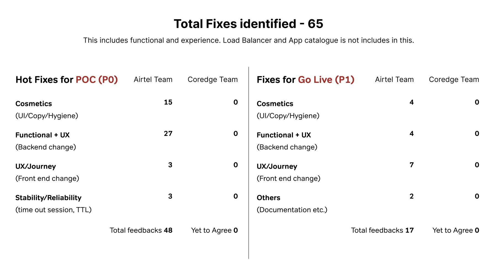
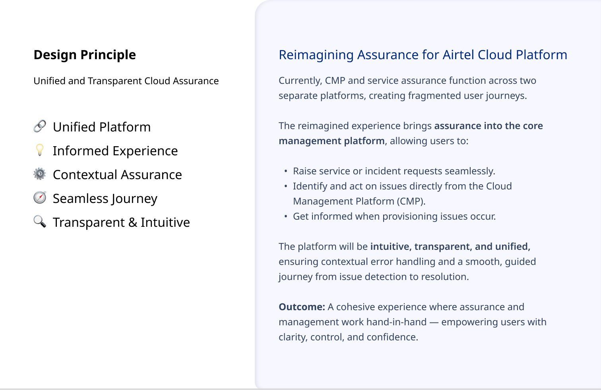
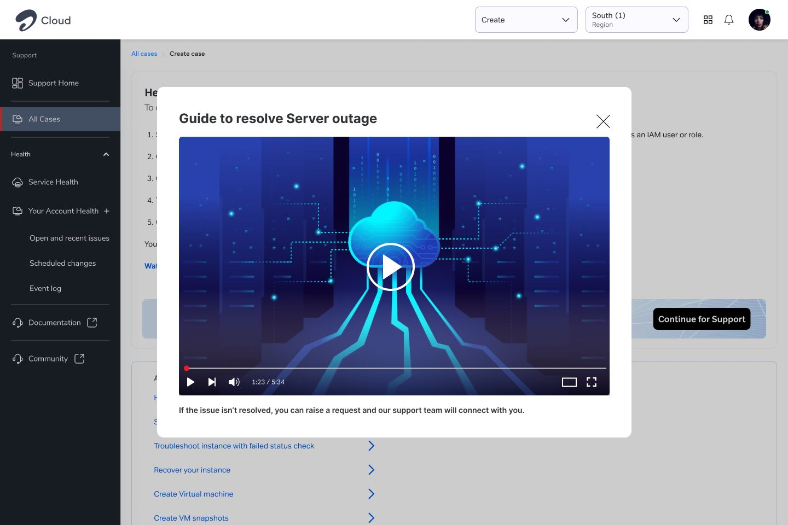
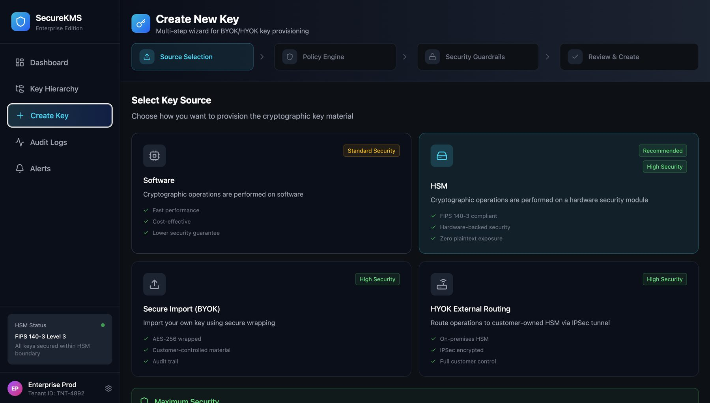
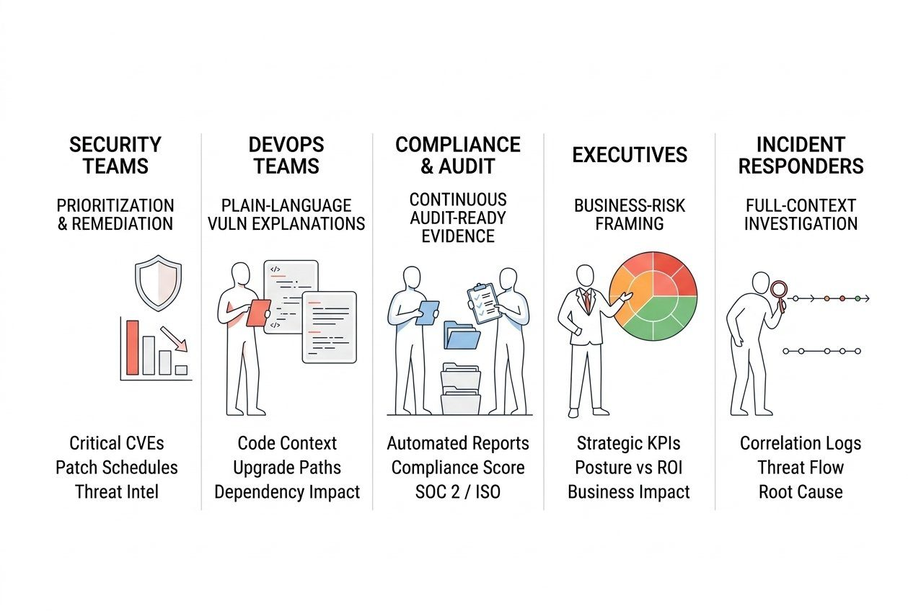
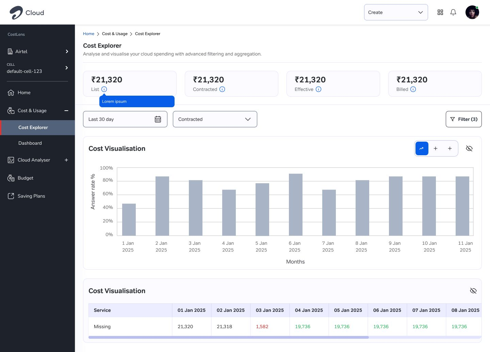

Airtel Cloud is Airtel's enterprise cloud console: compute, storage, security, cost and migration tools for business customers. It launched in August 2025 on a deliberately minimal scope.
Design lead, from pre-launch audit through launch to the design handover in April–May 2026. I owned the research and design decisions, and used AI tools for much of the execution.
Senior Lead Product Designer, Airtel
Aug 2025 – May 2026
How I worked
Each thread started with research fitted to the relationship it had to change — then a design the team that owned it could adopt.
- AuditField-level testing of the agency's build before go-live
- BenchmarkAWS, Azure and GCP consoles; CSPM against Azure Defender and Google SCC
- MapThe full order-to-activation lifecycle and who owns each step
- AlignWorking sessions with infrastructure, the agency and ServiceNow
- ConceptWritten proposals and three explored concepts before committing
- Hand overPrototypes vendors build to; a phased roadmap for what's next
Why the Cloud platform?
Airtel launched Cloud with 18 enterprise clients and a target of 50 by 2027, with contract value expected to grow roughly tenfold. The bet was to launch on time and let real usage decide what to build next.
No single team controlled the product. An external agency built the core console, a security vendor owned key management with a spec and no design, a partner team owned security posture (CSPM), and two internal teams built Cost Analyser and CloudFerry migration on their own. Every improvement had to be earned, not mandated.


The problem: a platform that couldn't explain itself
The biggest usability risk wasn't a missing feature. It was inconsistency on the fields customers touch first, a security tool that could show everything but couldn't say what to fix first, and a support flow that pretended one team owned a journey that crossed five.
“I started this project sure that everything should be unified. Research proved me wrong.”
Project goals
- At least 85% usability success on core platform tasks
- At least 80% success at discovering the right service
- 10% fewer support tickets caused by usability problems
My starting hypothesis was that unifying every tool into one experience would get us there. A study of how AWS, Azure and GCP structure their consoles showed the opposite: every major provider keeps tools deliberately separate, for permissions and cognitive load. I switched to a shared experience language — common patterns and components across tools that stay appropriately separate.
Improvement 1: Assurance as self-service, not a ticket form
Assurance, the support layer, shipped knowingly broken to protect the launch date. Six to eight months later I rebuilt it from a written proposal with five principles and three explored concepts. Guided fixes and an explainer video now come first; a pre-filled support form, with live help always available, is the last resort by design.



Improvement 2: Key management from a spec, and security that prioritises
The key management service (KMS) came from the vendor as a technical spec with no design. I designed the whole interaction model — including the Software, HSM, bring-your-own-key and hold-your-own-key choice — and the agency built the live integration to my prototype.
For CSPM, I benchmarked the product against Azure Defender and Google Security Command Center across five personas, from security teams to executives. That reframed it from a reporting tool into decision support: what to fix first, and why.
Research & testing
Field-level testing before go-live found conflicting validation and undocumented limits, which the agency then re-prioritised. A year in, the deepest finding surfaced: access permissions were still being assembled by hand, which made identity the platform's real constraint.




Influence without authority
Most of what slowed this down sat outside design. What got in the way, and how I worked around it:
I led with evidence — audits, benchmarks and prototypes — so teams adopted the design because it was right, not because they were told to.
Migrating it wasn't possible within the go-to-market timeline, so I started a shared component library that future builds can adopt directly.
I designed the whole interaction model from the spec, rather than waiting for someone else to interpret it.
Mapping the lifecycle first showed a better form wouldn't fix it; it needed a cross-system journey.
Outcomes are listed as shipped vs in progress; usability and ticket numbers are being confirmed with product.
What I gave up, on purpose
Most of the important calls on Cloud were about what not to do.
| Decision | What I gave up | Why |
|---|---|---|
| Launched with a knowingly broken Assurance | A good support experience at launch | Protected the go-live date; rebuilt it once real usage showed where to invest |
| Consistent design language, not one unified console | A single, seamless experience | Mature cloud platforms keep tools separate for permissions and cognitive load |
| Component library instead of migrating the existing build | Immediate visual consistency | Migration wasn't possible within the launch timeline; new builds stay consistent |
| Self-service first, support form last | The quickest route to raising a ticket | Most issues can be fixed with guidance; escalation stays one step away |
| Shelved a finished Observability spec | Visible, demo-ready work | Identity and access was the platform's real constraint |
| Three-phase roadmap, Phases 2–3 deferred | Fixing everything at once | Phase 1 could start in-house now, with the rest sequenced |
The impact
Shipped: the Price Calculator and service-documentation template, console hygiene fixes, a rebuilt Assurance, and a KMS prototype adopted into the live platform. CSPM, Cost Analyser and CloudFerry redesigns were in progress at handover. Observability was specced and deliberately shelved once identity became the priority.
What I'd do differently: push to sequence identity and access before launch, rather than discover the need a year in. The harder discipline here was saying no to my own finished work and my own starting strategy.